THE ADVENTURE OF THE EVOLVING LINK
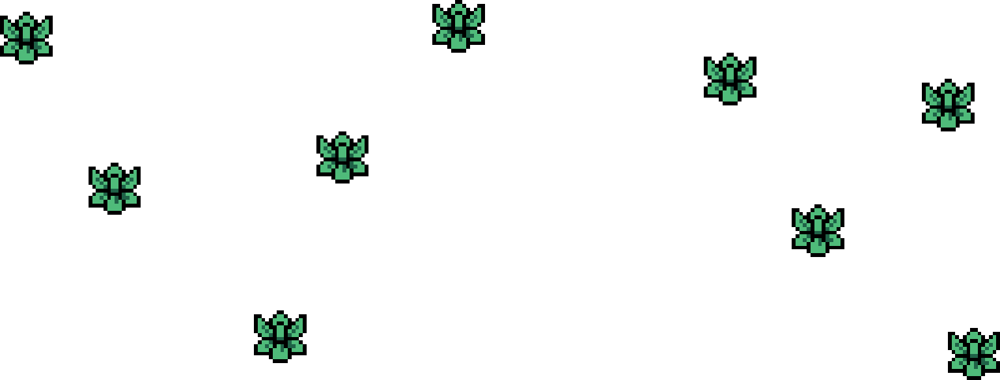 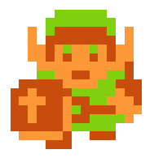START
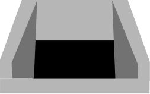What game is this link from?
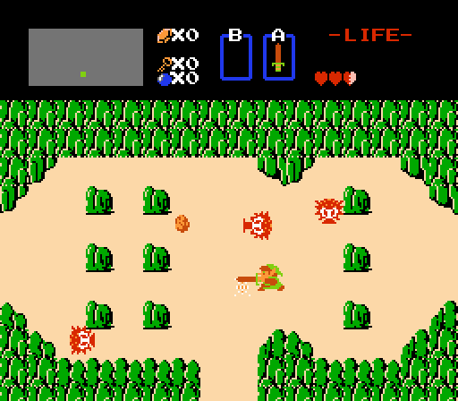In The legend of Zelda 1986, link aims to collect eight fragments of the Triforce of Wisdom, a sacred power that's meant to protect the world of Hyrule. Gathering these fragments saves the princess Zelda from the antagonist Ganon.
Fire
Fire prevents link from progressing in dungeons. In some games fire hurts link, but he can still walk through it.
What game is this link from?
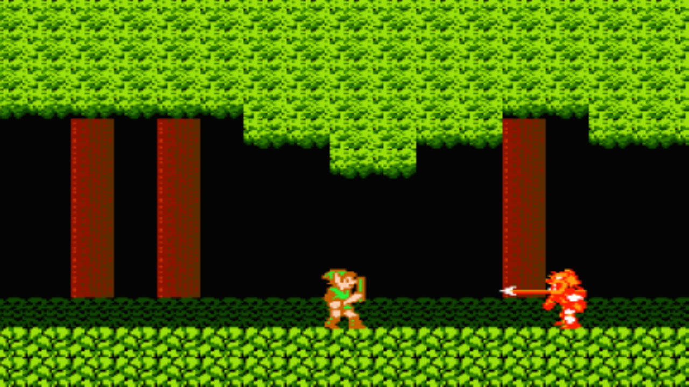In Zelda ||: The Adventure of Link, Link has to awaken princess Zelda who has been enchanted. When Link collects six crystals that are located in six palaces, the shield around the last palace fades. However, Ganon intervenes with his plan at every turn.
Heavy block

In the games, this block can be pushed in any direction. They are mainly used to block paths or open up ways to solve a puzzle.
What game is this link from?
In The legend of Zelda 1986, link aims to collect eight fragments of the Triforce of Wisdom, a sacred power that's meant to protect the world of Hyrule. Gathering these fragments saves the princess Zelda from the antagonist Ganon.
Bow
The primary weapons link usually wields are his (master) sword and his bow. The bow enables link to fight long-distance-type enemy's with more ease.
What game is this link from?
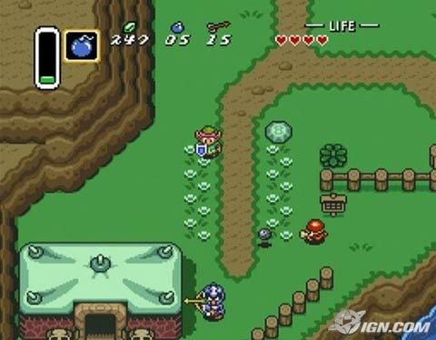In the Legend of Zelda a link to the past, the story is officially set many years before the events of the first two Zelda games. The player assumes the role of Link as he journeys to save Hyrule, defeat the demon king Ganon, and rescue the descendants of the Seven Sages.
Spear-guard
Some levels include a fight against a 'mini-boss'. This is a semi-strong enemy that fulfills the role of a boss, yet is weaker than the actually boss of a dungeon.
What game is this link from?

In the Legend of Zelda Ocarina of time, link goes on a quest to stop the evil king Ganondorf, by traveling through time and navigating dungeons and an overworld. The player must learn to play numerous songs on an ocarina to progress.
Key in a chest
Some rooms require you to solve a puzzle or perform an action to progress to the next room. A doorkey is commonly used to open shut door that prevent the player from entering the next room.
What game is this link from?
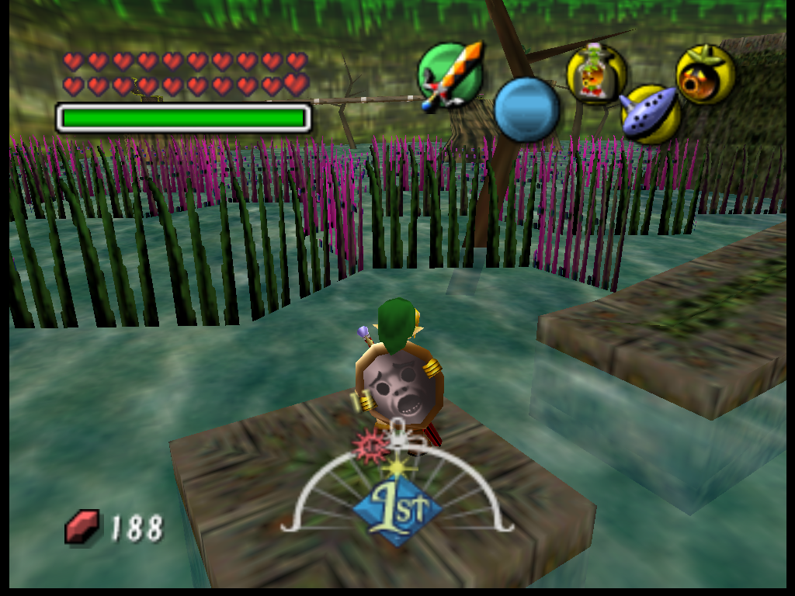The story of The legend of zelda Majora's Mask, we follow Link, who on a personal quest ends up in Termina, a world parallel to Hyrule. Upon reaching Termina, Link learns that the world is endangered as the moon will fall into the world in three days.
Bombs

Bombs are a staple of the Zelda franchise. They can be used to blow up obstacles and damage opponents. In some games, the bombs also damage link.
What game is this link from?
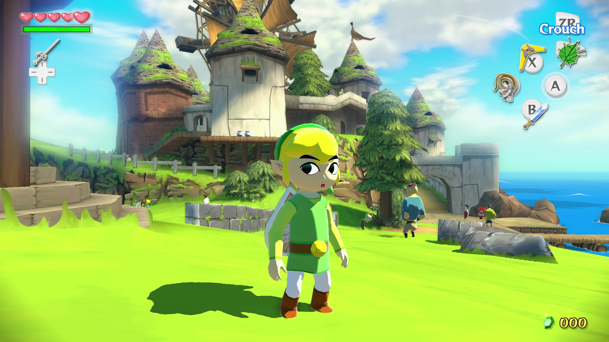In The legend of Zelda the Wind Waker, Link attemps to save his sister from the sorcerer Ganon. Link sails the ocean, explores islands, and traverses dungeons to acquire the power necessary to defeat Ganon.
Waterrod
The Water Rod allows Links to create pillars of water that can be used as platforms, regardless of whether or not water is present. These pillars can stun most enemies and eject aquatic enemies out of the water.
What game is this link from?
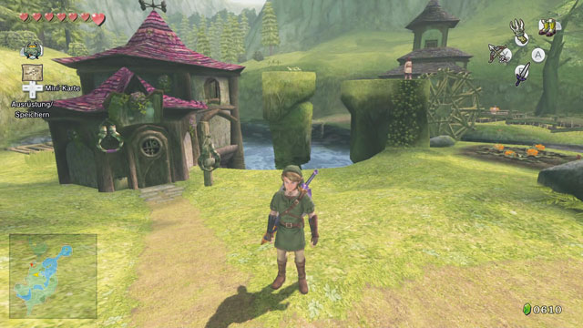In The Legend of Zelda Twilight princess, link tries to prevent Hyrule from being engulfed by a corrupted parallel dimension known as the Twilight Realm. To do so, he takes the form of both a Hylian and a wolf, and he is assisted by a mysterious creature named Midna.
Sand-enemy
This sand-enemy is weak to water attacks. The item you received in the room prior to this room, can be used to take this enemy down with ease.
What game is this link from?
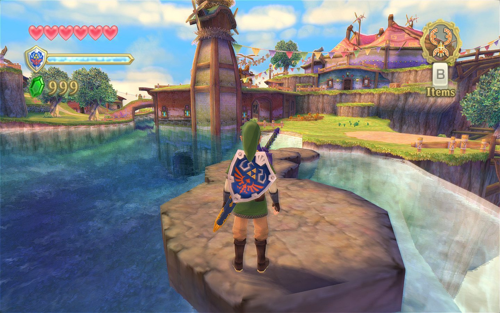This game is a remake of The legend of Zelda the Wind Waker. This means that the story-line is the same as the earlier version of this game. The remake improved the game's graphics considerable.
Hover-boots
Hover-boots allow Link to walk on water or thin air for a few seconds and thereby cross otherwise impassable pitfalls. This is a useful and sometimes necessary ability in the games.
What game is this link from?
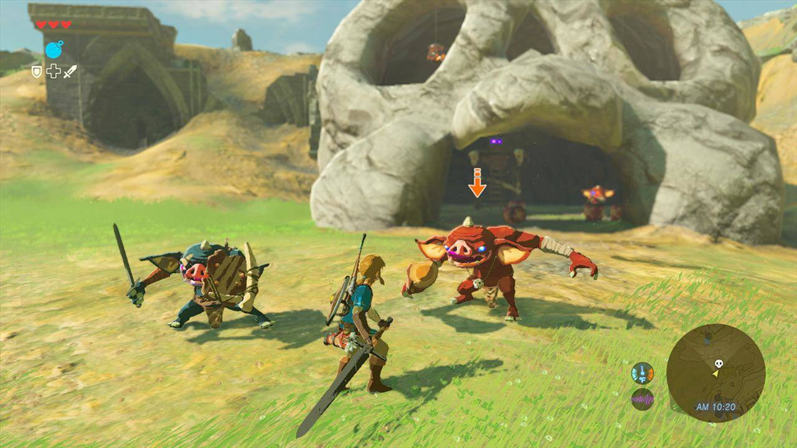In The Legend of Zelda Breath of the Wild, an amnesiac Link, who awakens from a hundred-year slumber, tries to regain his memories, defeat Calamity Ganon, and restore the kingdom of Hyrule. This game is the first open-world Zelda game and was revolutionary for the franchise.
BACK TO THE TOP
What game is this link from?
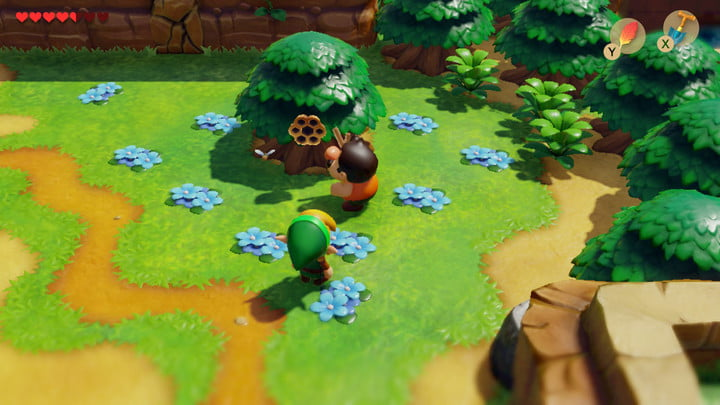Link's Awakening is one of the few Zelda games not to take place in the land of Hyrule. Instead, Link begins the game stranded on Koholint Island, a place guarded by a whale-like deity called the Wind Fish. Link sets on his quest to awaken the sleeping fish and escape from the island. This game is a remake of an older version
Ganon
Ganon is the final boss of most of the Zelda games. His specific motives vary from game to game, but most often involve capturing Princess Zelda of Hyrule, the games' usual setting, and planning to conquer Hyrule and the world at large.